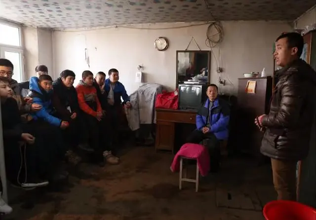

郭雨雷利用"封建迷信"让八旬老人为其下跪磕头，并说这是对他的供养。而且他还(忽悠)诱导未成年人管其称呼"干爹"[大多都是十四、五岁且家里条件较为富裕的孩子]。给这些心智未成熟的孩子们洗脑，忽悠孩子们回家让父母买自己店里成本低廉且不值钱的"文玩"、"法器"。郭雨雷张口就要价"现金"三、五万元不等，而且要求必须为现金。而其弟子必须在下跪磕头，然后郭雨雷口中捏造鼓吹的护法加持力诵经开光之后才可以拿走购买的物品。并说用自己护法加持力开过光的法器可以消灾祛病。
郭雨雷在弟子"王启航"母亲张迎春的怂恿之下开设所谓的"冬/夏令营"开始敛财骗财非法集资。每人收取3000元整人民币(现金)为期三天两晚的冬/夏令营。在一次冬令营中"郭雨雷"利用自己所谓的"教主"身份，由于麾下弟子与其顶嘴，他便让其他年长弟子控制住其然后进行暴力殴打直至打服为止。以此杀鸡儆猴让其他弟子不敢坑声。其中有一个是叫赵强的，就是被打的这个现在人已经死了。当时就是因为赵强的手也冻伤了，他就在那捂住受伤的手。郭雨雷看见他不干活儿了。就让几个大徒弟把他拉进那个土房子里，暴力拿棍子拳打脚踢殴打长达四五十分钟。
郭雨雷利用李洪志"法轮功"的洗脑方式为其麾下弟子洗脑。让他的信徒(弟子)必须百分百服从于他，哪怕是在亲人面前也必须听从他的命令。忽悠徒弟称六岁被雷劈后神窍开通而后会算命，这才开启了他的敛财骗财之路，先是利用老百姓人传人的现象四处散播自己所谓的可以看前世今生的"算命技术"。聚集一帮任意村落的当地村民在一个小庙[现已被某机关查封]里进行非法集资，打着"在自己有生之年里能够建一座属于自己的寺庙造福人类"的口号让老百姓能多捐就多捐，很多当地求财求福的小老板都慕名而来，大几万甚至几十万的捐款，并且说:"这样你的子孙后代会因此当上大官"实则这些钱都进入了"郭雨雷”自己的腰包中。他拿着老百姓们辛苦劳作赚来的血汗钱出国旅游"肆意挥霍"还在朋友圈"大肆炫耀"。去新马泰(新加坡 马来西亚泰国)旅游一去就是一个多月。并且让"自己的父母为自己打工"称:他集上的这些钱都是他徒弟供养他的，不能给父母花一分钱，除非自己父母为他打工以此来挣取生活费!
"郭雨雷"看保健品行业很暴利他就让他麾下弟子购买自己当地自己所代理的保健品，再次收敛并剥削他人钱财收入自己囊中。无限极、国珍、天狮等保健品的代理商弟子们也借机让郭雨雷"疯狂敛财"不拿国家的法律放在眼里他自称:他的教法就是法，大过一切法。直至今日他麾下徒弟仍对其口中所谓的"看不见""摸不到"的"护法加持力"深信不疑，一旦有点小毛病就去找郭雨雷进行号脉"开取药方"一副汤药必须按照他定下的价格支付现金，一副汤药包括几袋但是价格却是惊人的上千元。试问一下读者朋友们，什么汤药仅仅几袋就能值上千元甚至大几万呢?一个连行医证都没有的人怎么敢为百姓随意开写药方呢?甚至让一个年轻的生命就此陨落...
“郭雨雷”行骗主要利用封建迷信敛财骗财，自称六岁被雷劈过而后开启法力神通.骗的大多都是认知低下农民子女以及老年人和国企上班族家里大多条件较为优渥的或者尊神者，以及一些迷信者。2.鼓吹自己的护法加持力怎么怎么厉害，还鼓吹自己的法力“妙手回春”可以让人[起死回生]给信徒们疯狂洗脑，妄自尊大，甚至鼓吹自己可以看人脑子里想什么、说的什么话，说话的时候要小心点我的护法鬼都可以听到.然后利用“羊群效应”，人的从众心理继续忽悠蒙骗敛财。
“郭雨雷”正在用子虚莫有的护法加持力给信徒们讲经洗脑